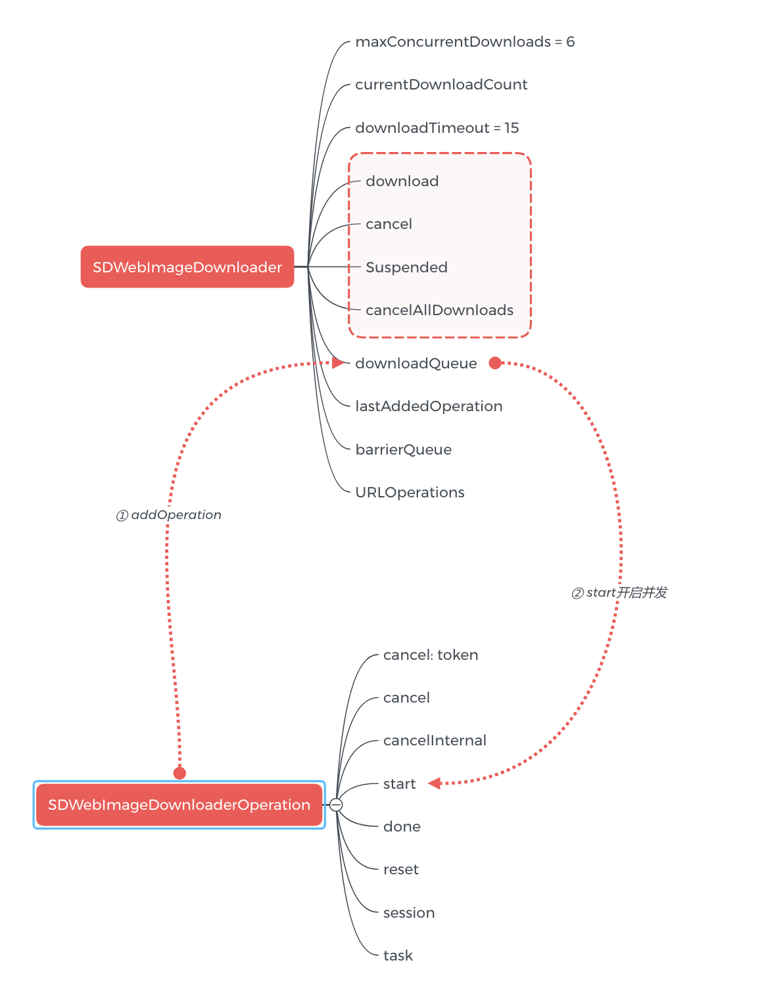

基于SDWebImage的多线程分析
1. 关于锁
1.1. NSLock
1 | _lock.lock() |
2. synchronized
synchronized 可以嵌套 内部有递归锁
1 | @synchronized(obj) {} |
3. objc_sync
1 | @try { |
4. ispatch_semaphore_t 作锁用 (SDImage)
1 | dispatch_semaphore_create(1) |
总之锁如果用不好，尽量避免使用：
- 消耗性能
- 有死锁的风险
2. 分析源码中的多线如何处理
- ‘SDWebImage’, ‘4.4.6’ 以下简称 SD
- 本篇剖析一下SD的多线程下载处理
2.1 下载队列的线程安全
NSOperation、NSOperationQueue 是基于 GCD 更高一层的封装，完全面向对象。但是比 GCD 更简单易用、代码可读性也更高。
NSOperationQueue控制并发和串行只需要设置maxConcurrentOperationCount
调度队列 更可控 （eg. SDWebImageDownloaderExecutionOrder）FIFO LIFO

业务分析：Art的PDF以后如果还有需求感觉也可以参考SD的这个模式，控制并发数和下载速度更方便
2.2 内存缓存的线程安全(NSCache)
NSCache是线程安全的，在多线程操作中，不需要对Cache加锁。读取缓存的时候是在主线程中进行，由于使用NSCache进行存储，所以不需要担心单个value对象的线程安全。
2.3 磁盘缓存的线程安全(NSFileManager)
所有磁盘读写在一个ioqueue内，保证串行(art类似)
- 参考文档